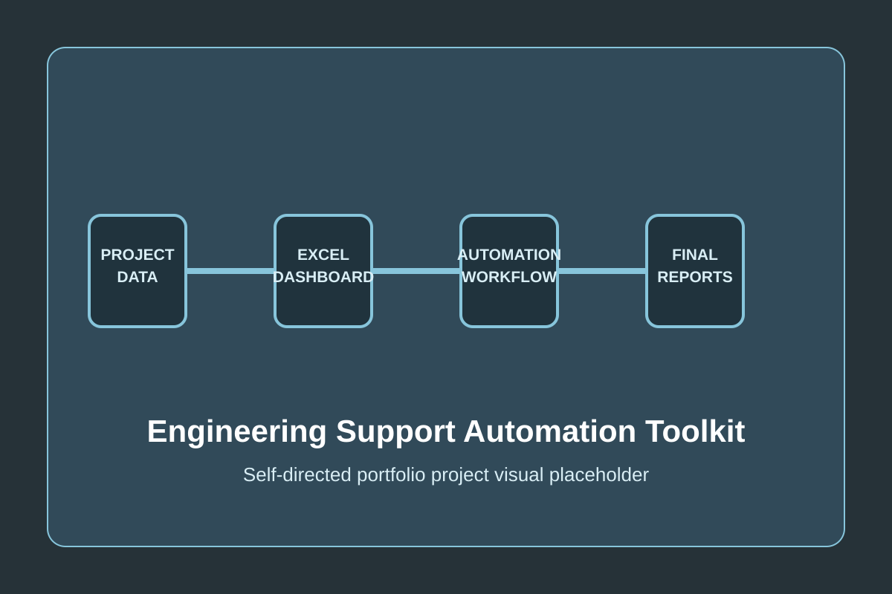
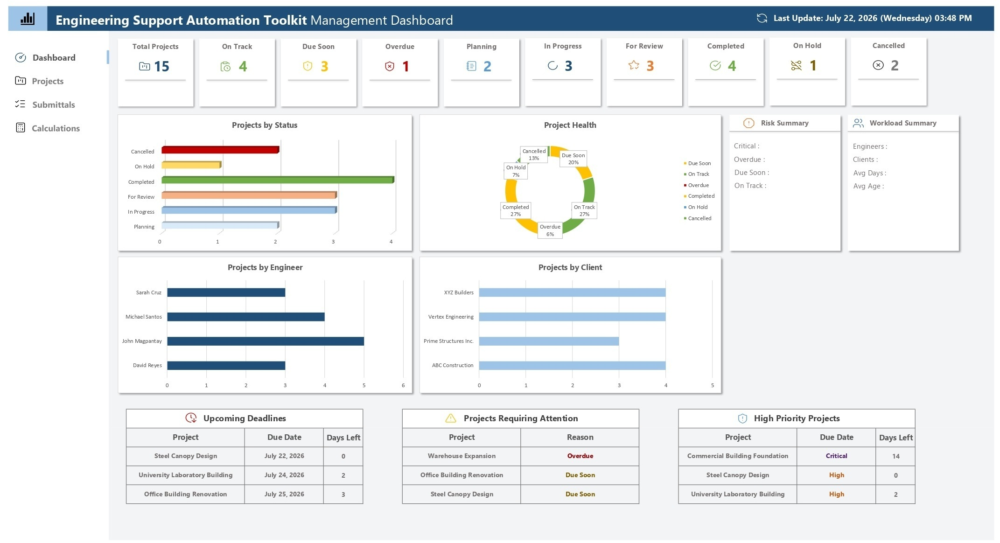
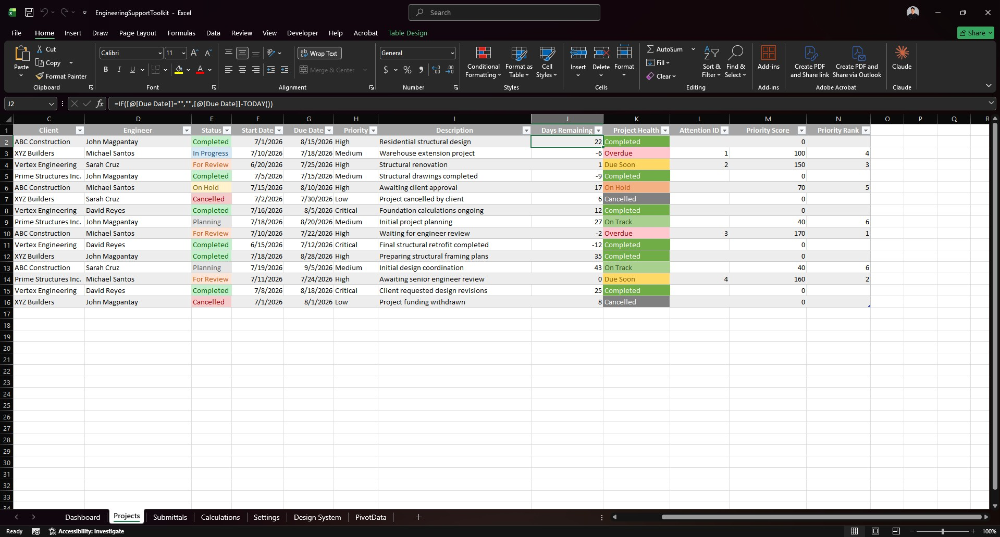
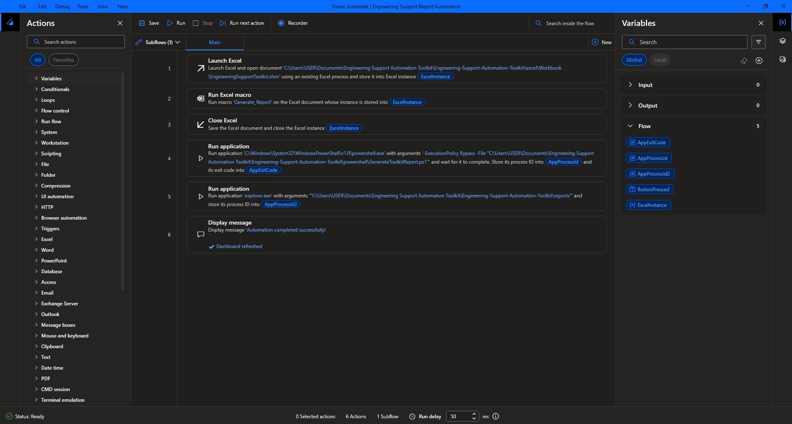
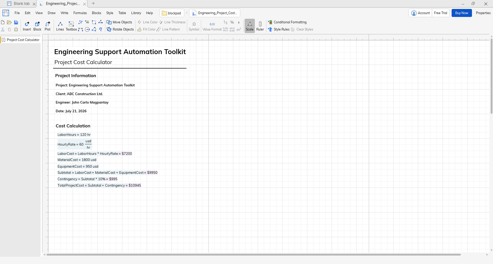

Engineering Support Automation Toolkit
Engineering Support Automation Toolkit
Self-Directed Workflow Automation Project

Project Overview
The Engineering Support Automation Toolkit is a self-directed portfolio project inspired by Engineering Support workflows. It was created while preparing for an Engineering Support Virtual Assistant opportunity, not for a client or a production Engineering Support environment.
Instead of building disconnected spreadsheet automations, the toolkit was intentionally designed around responsibilities commonly found in engineering support: organizing project information, maintaining project trackers, generating reports, automating repetitive tasks, documenting workflows, and improving operational efficiency.
Project Resources
GitHub Repository
Browse the complete source code, project structure, documentation, and version history.
View RepositoryDocumentation
Read the project documentation, architecture, setup instructions, workflow, and implementation notes.
Open READMEProject Structure
Explore the repository folders, automation scripts, Excel files, PowerShell scripts, and sample data used throughout the project.
Browse FilesProject Story
This project began as a self-directed learning initiative. My previous experience included Technical Support, CRM Administration, SQL, Automation, and IT Administration.
Rather than simply stating that I was willing to learn Engineering Support, I researched technologies mentioned in the job description and built a complete portfolio project inspired by Engineering Support workflows. The objective was to demonstrate initiative, adaptability, and practical problem-solving by integrating multiple technologies into a realistic workflow.
Business Context
The toolkit models an engineering-support-style reporting workflow using sample project data. It is not a client implementation, an internal company system, or a production tool, and it does not automate confidential client processes.
Technologies & Tools Used
Microsoft Excel
- Project Tracker and Dashboard
- KPI Summary, Pivot Tables, and Pivot Charts
- Conditional Formatting and Data Validation
- Deadline Tracking and Project Health Indicators
VBA
- Refresh Dashboard
- Generate Reports
- Export PDF
- Reduce repetitive manual work
Workflow & Supporting Tools
- Power Automate Desktop for workflow orchestration
- PowerShell to archive reports, organize output, and generate execution logs
- Blockpad Project Cost Calculator for engineering-focused learning
- Git & GitHub for version control, documentation, portfolio hosting, and release management
Blockpad was included to demonstrate adaptability and willingness to learn engineering-focused software; it does not replace dedicated engineering applications.
Repository Architecture
The toolkit's documented repository structure separates assets, automation files, documentation, sample data, and generated output:
Engineering-Support-Automation-Toolkit/
├── assets/
├── blockpad/
├── docs/
├── excel/
├── pdf/
├── powerautomate/
├── powershell/
├── sample-data/
└── README.mdWorkflow
Project Data
↓
Microsoft Excel (Project Tracker)
↓
Dashboard (KPIs / Charts)
↓
VBA Macro (Refresh + Export PDF)
↓
Power Automate Desktop (Workflow Orchestration)
↓
PowerShell (Archive Reports / Generate Logs)
↓
Final ReportsFeatures
Microsoft Excel
- Project Tracker
- Dashboard
- KPI Summary
- Pivot Tables and Charts
- Deadline Tracking
- Project Health Indicators
Automation
- VBA report generation
- Dashboard refresh
- PDF export
- Power Automate Desktop orchestration
- PowerShell archive and log generation
Supporting Work
- Blockpad Project Cost Calculator
- README and folder organization
- Git version control
- GitHub documentation and release management
Project Outcome
The Engineering Support Automation Toolkit was developed as a self-directed learning initiative while preparing for an Engineering Support Virtual Assistant opportunity.
It was presented during the technical interview and client interview to demonstrate initiative, problem-solving, and the ability to integrate multiple technologies into a practical workflow. The project contributed to successfully securing the Engineering Support VA position; it was not the sole reason for receiving the offer.
Project Screenshots & Visuals
The screenshots below will showcase the Engineering Support Automation Toolkit dashboard, project worksheet, Power Automate workflow, and BlockPad calculator once the final portfolio assets are prepared.




Ongoing Support & Maintenance
As a portfolio project, the toolkit can be extended without exposing client or confidential information. Future versions can continue to use sample data and documented workflows.
Key Takeaways & Lessons Learned
- Building practical projects demonstrates learning more effectively than listing technologies on a resume.
- Recruiters respond positively to initiative backed by tangible work.
- Process automation provides greater value than mastering isolated tools.
- Documentation is an essential part of software projects.
- Honest positioning builds credibility.
Future Roadmap
Version 1.1
- Improved dashboard interface
- Additional reporting features
Version 1.2
- Expanded PowerShell automation
Version 1.3
- Additional Excel analytics
Version 2.0
An updated Engineering Support Toolkit inspired by real-world Engineering Support experience while excluding all confidential client information.
Interested in working together?
Let's discuss how I can help with your next project.
Get In Touch View More Projects